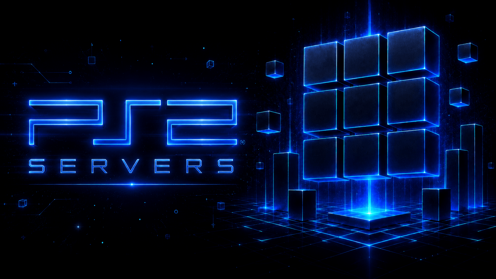

PS2 Servers Documentation
DESKTOP GUI
CORE HEADLESS
EDGE GO SERVER
UDPFS · SMBV1/2/3 · UDPBD · HTTP
OPENWRT & ROUTERS
AUTO MODULO & STANDARD
ON-THE-FLY DECOMPRESSION
First Time Connecting a PS2?
Choose the
matching protocol and PC path before starting:
UDPFS/SMB/HTTP serve game-library folders, while
UDPBD serves
one block-image file. They are not interchangeable. If your console says
mass0: or "cannot open folder", read the
UDPBD troubleshooting guide.
About PS2 Servers
PS2 Servers provides dedicated, lightweight game and file servers for network-capable PlayStation 2 homebrew (including
Open PS2 Loader (OPL),
RiptOPL,
Neutrino, and
NHDDL). It is delivered in three deployment editions:
Desktop provides a simple click-and-go graphical launcher;
Core runs the identical Python servers headlessly from any terminal, script, or container; and
Edge is a high-speed, statically linked Go implementation designed for home routers (OpenWrt), Raspberry Pi, NAS appliances, and minimal Linux setups.
For the PS2 console loader side, see the companion
RiptOPL Documentation.
Sister Project: RiptOPL & POPStarter Documentation
Looking for console-side loader guides, theme configuration, controller pairing, Neutrino launch arguments, or POPSTARTER VCD setups?
Visit the comprehensive
RiptOPL Docs and the
POPStarter Docs for complete client-side walkthroughs.
Six Server Modes
Choose the protocol supported by your PS2 loader. A server cannot add a protocol to a client that does not implement it.
UDPFS
Port: UDP 62966 (0xF5F6) + dynamic or pinned data port
High-speed modern file and disc-image streaming over UDP. Features automatic Standard/Modulo mode negotiation per client, multi-client concurrency, and optional on-the-fly decompression of CHD, CSO, and ZSO images. Works seamlessly with NHDDL, Neutrino, and RiptOPL.
Explore UDPFS setup →
SMBv1
Port: TCP 1025 (Desktop) · TCP 1111 (Core / Edge)
Custom user-space guest file sharing for OPL and legacy SMBv1 clients. Implements the SMBv1 dialect directly in user space without requiring you to enable insecure Windows SMB1 features or expose port 445. Share name defaults to games.
Explore SMBv1 guide →
SMB2 / SMB3
Port: TCP 1445
Authenticated modern SMB file sharing for newer loaders supporting SMB 2.0.2 through SMB 3.0.2. Run alongside or separately from SMBv1. Provides password protection, writable shares for Virtual Memory Cards (VMC), and optional port 445 admin capture.
Explore SMB2/3 configuration →
UDPBD
Port: UDP 48573 (0xBDBD)
Serves one disk image as a raw UDP block device. Discovered automatically via broadcast packets. Designed for loaders with built-in UDPBD block drivers, providing low overhead and direct sector access.
Explore UDPBD mode →
HTTP Game Streaming
Port: TCP 1100 (explicit)
Experimental game streaming for compatible OPL HTTP loaders (Docmine17 and RiptOPL). Automatically generates games.csv and serves disc images via HTTP Range requests. Supports server-side CHD/CSO decoding and raw ZSO streaming.
Explore HTTP streaming →
Edge & Web UI
Port: UDP 62966 / TCP 1111 / TCP 8082 (Web UI)
High-performance native Go binary compiled for OpenWrt routers, Raspberry Pi, ARM NAS, and minimal Linux appliances. Includes an embedded responsive Web GUI for LAN monitoring and service management with sub-32MB memory footprint.
Explore Edge & Web UI →
Three Deployment Shapes
Whether you want a simple desktop window with one-click toggles, a scriptable terminal command for automation, or a lightweight daemon on your home router, PS2 Servers has an edition built for your workflow.
PS2 Servers Desktop
Target: Windows, macOS, Linux workstations
The full graphical application featuring six server cards, integrated Windows Firewall management, live LAN IP selector, automated dependency checks, and persistent configuration saving. Runs self-contained with no Python installation required.
Desktop documentation →
PS2 Servers Core
Target: Terminal users, servers, Docker containers, systemd
Executes the identical Python servers without opening a GUI window. Perfect for headless PC servers, background cron jobs, and CI/CD testing. Accessed via python ps2servers.py serve <mode> or the packaged executable.
CLI command reference →
PS2 Servers Edge
Target: OpenWrt routers, Raspberry Pi, NAS, embedded SBCs
Statically linked Go binaries tailored for embedded hardware and routers. Consumes minimal memory, runs without Python, and offers an optional password-protected Web management dashboard. Available for MIPS, ARM, x86, and RISC-V.
Edge architecture guide →
What PS2 Servers Solves
- No Windows SMB1 security risks — serves SMBv1 via a standalone user-space server on custom ports (1025/1111). Windows File Sharing and SMB1 features remain completely disabled.
- Automatic Modulo & Standard UDPFS — dynamically detects whether your loader uses the standard or Modulo UDPFS dialect and responds appropriately, eliminating connection deadlocks.
- On-the-fly decompression — transparently streams compressed CHD, CSO, and ZSO images to the PS2 as standard disc images, saving hundreds of gigabytes of PC storage.
- Router & NAS native deployment — run your server 24/7 on an OpenWrt router or Raspberry Pi directly beside your console with zero PC required.
- Comprehensive diagnostic observability — Core and Edge provide structured handoff logs, ARP status probing, and out-of-sequence packet diagnostics to pinpoint network stalls instantly.
Next Steps
Connect your PS2 to your PC or network, configure static IPs, and launch your first game over Ethernet in under 10 minutes.
Find the right package for your OS (Windows portable zip, Linux AppImage/tar.gz, macOS arm64/x64, Edge architectures).
Games list but fail to launch? Check bind addresses, interface selection, and the 45-second inactivity timeout guide.
Learn why unsigned network executables get flagged by heuristic scanners and how to verify checksums and attestations.